ピクセルアートを描きつつ、ゲーム制作や自作立ち絵で配信などを行っています。
ご依頼なども受付中です。
| サムネ | タイトル | ゲーム概要 |
|---|---|---|
| 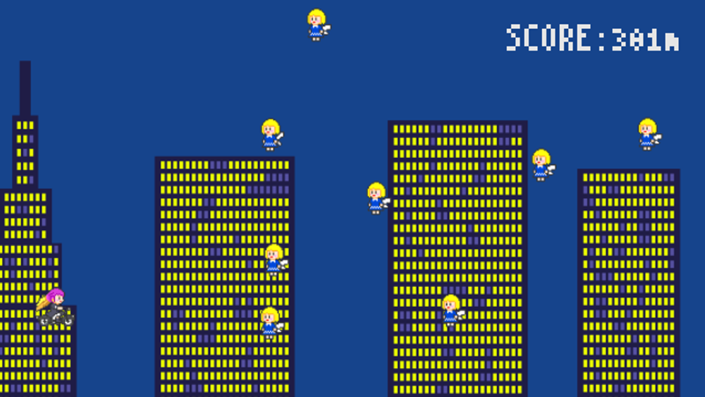 | ナムサンライダー | 東方ゲームジャム2020参加作品 シンプルな避けゲーを目指した初期作 左右移動で聖白蓮を操作して画面右からやってくる妖精を避け続ける Unityの知識が少なかったのでシンプルに終わる内容を目指した |
| 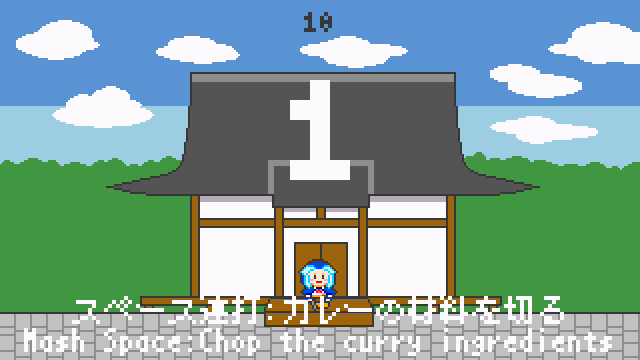 | 命蓮寺のアツアツ！カレーづくり | 東方ゲームジャム2021参加作品 ボタン連打、キー入力、タイミング入力など、シンプル操作でカレーを作るミニゲーム集 前作がシンプルだったので、ミニゲーム集にすることでボリュームを意識した ゲームジャムという短い期間の間に記録を競い合えるものを目指し、スコアにかかわらずプレイ時間はほぼ固定になるように時間内に●●する、みたいなミニゲームだけで構成 |
| 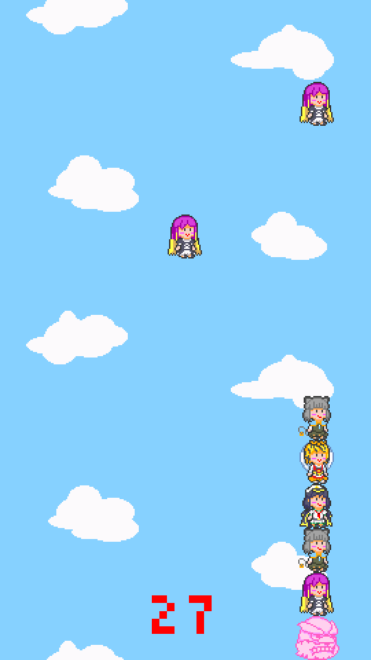 | ぬいぐるみ100体パワフルキャッチ！/ | 東方ゲームジャム2022参加作品 空から降ってくるぬいぐるみを、左右移動で忙しなくキャッチするゲーム テーマがかわいいだったので、ドット絵の技術を活かしかわいいゲームを目指した 移動してキャッチする、というシンプルだけどギリギリキャッチできる嬉しさ・悔しさがあるゲーム性 一定のパターンでランダムに変化する落下速度や、右端から左端に移動するパターンが出ないなど、ランダム性とゲーム性の間を取ったバランス |
| 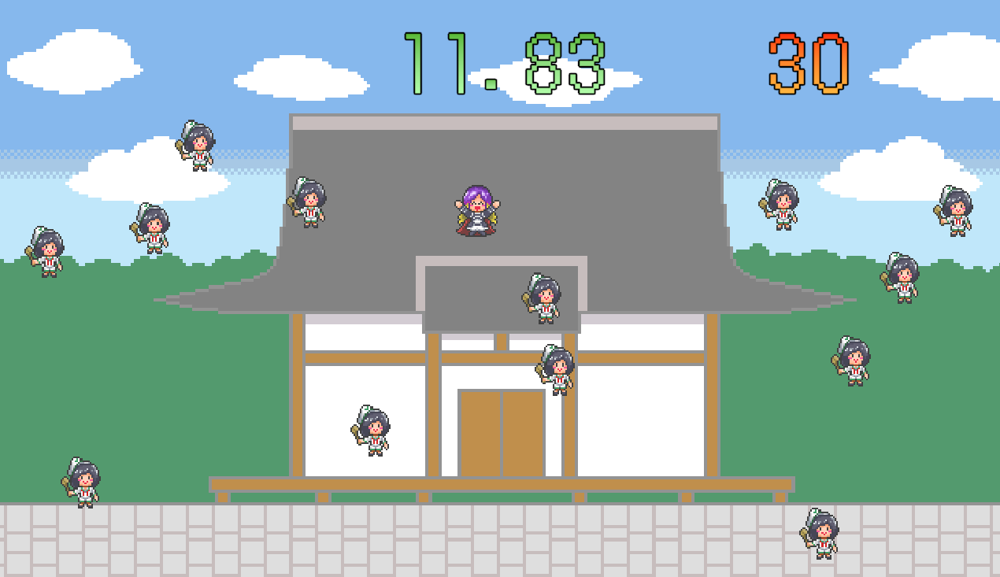 | 命蓮寺の！かわいいあの子を見つけて！/Find kawaii out in Myourenji!/ | 東方ゲームジャム2024参加作品 一人だけいる違うキャラをクリックする、時間内にキャラを探すゲーム 2年ぶりのゲームジャム開催作品、次々とキャラクターが増える絵面的面白さも 今回はマウスだけで完結するシンプルさと、時間に追われる面白さを意識し、一人だけ違うキャラがいたら面白いと思ったのでクリックゲームに/td> |
| サムネ | タイトル | イラスト概要 |
|---|---|---|
| まわるスターノちゃん | 2025年3月25日作成 2Dアクション（仮、開発凍結）や普段のイラストの資料として作成 16方向分 |
|
| 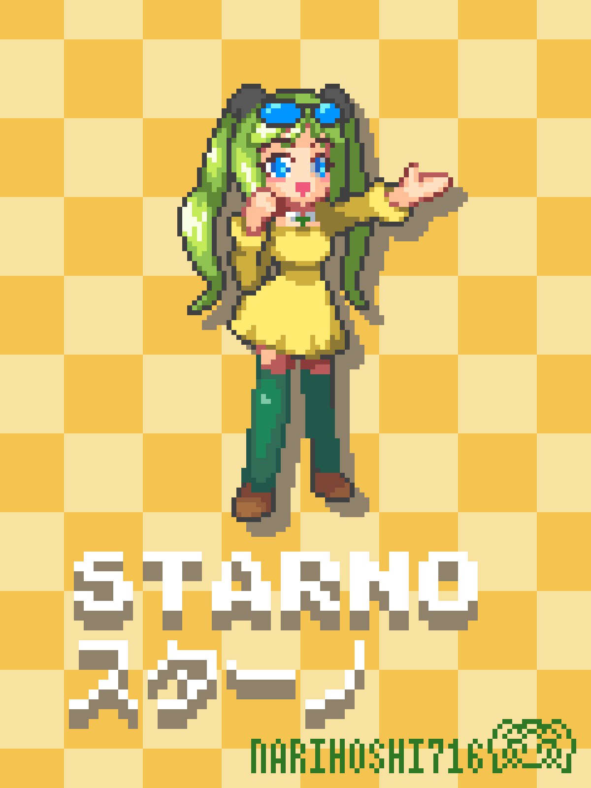 | スターノちゃん中サイズ | 2025年9月19日作成 中サイズドット絵のスターノちゃん 頭身のバランスやスッキリとした顔立ちが特徴的 |
| 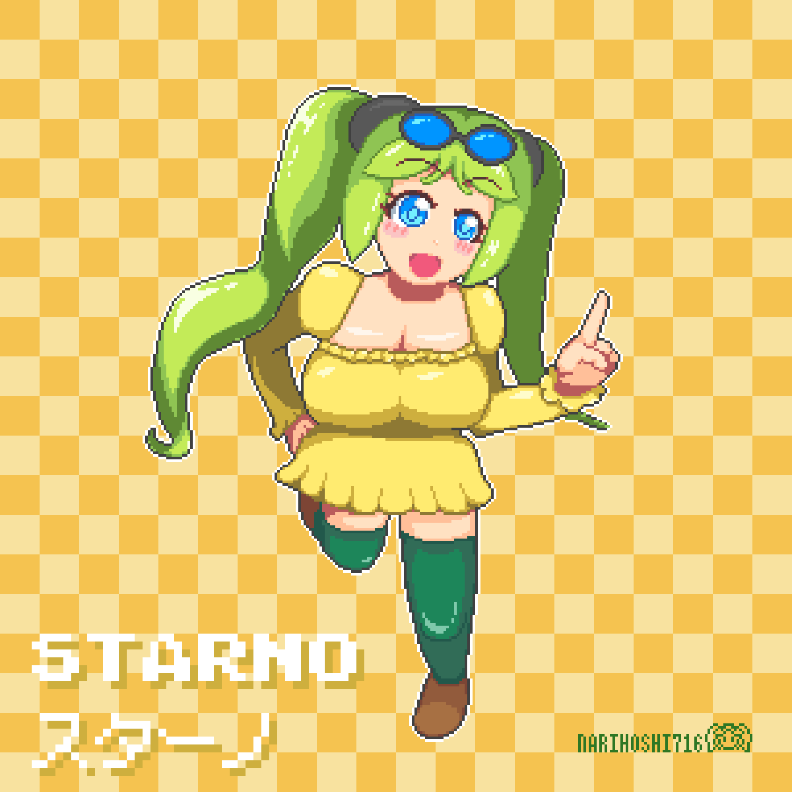 | スターノちゃん大サイズ | 2025年6月9日作成 OCのスターノちゃんは、ゲームとおしゃべり大好き、元気なビタミンカラーガール パワフルでアクティブなポーズを意識 |
| 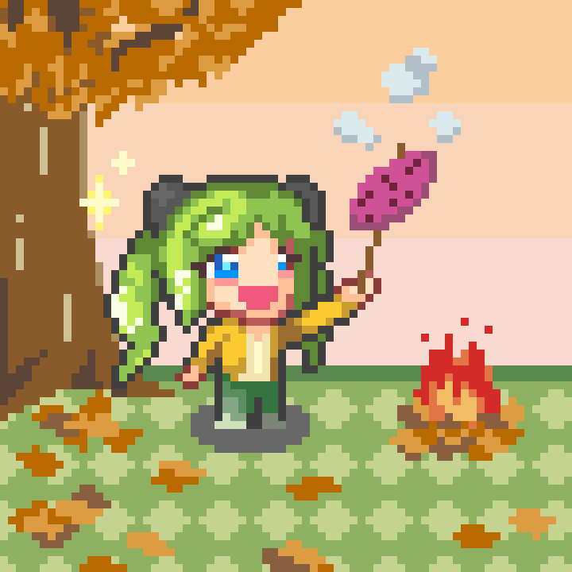 | スターノちゃんの食欲の秋 | 2025年10月2日作成 今日のスターノちゃんは食欲の秋の気分、焼き芋を焼いています 炎のゆらめきがお気に入りな、お絵描き配信で描いたイラスト |
| スターノちゃん Live2D立ち絵 | 2025年9月5日作成 配信で使っている立ち絵 AsepriteとLive2D Cubism Editorで作成 |
|
| 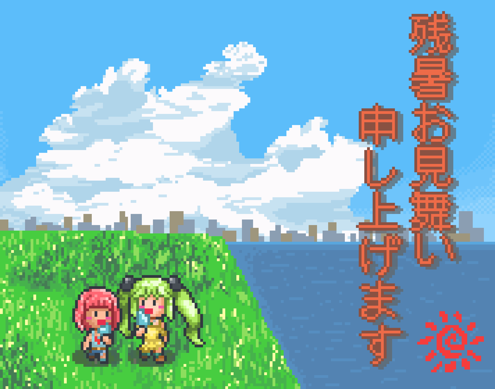 | 夏の帰り道 | 2024年8月17日作成 スターノちゃんとおともだちとの、何気ない日常の1ページ 背景の入道雲の立体感や、ノスタルジーを感じる河原の光景がこだわり |
| サムネ | タイトル | イラスト概要 |
|---|---|---|
| 2025年相葉夕美生誕祭 | 2025年4月15日作成 アイドルマスターシンデレラガールズ、相葉夕美ちゃんの大きいドット絵 朗らかな彼女の内面と外面を、爽やかな笑顔や、たなびくスカートで表現 |
|
| 2025年服部瞳子生誕祭 | 2025年10月10日作成 アイドルマスターシンデレラガールズ、服部瞳子さん（右）のお誕生日に相葉夕美ちゃん（中）と西園寺琴歌ちゃん（左）がやってきた SDドット絵で表現される彼女らの個性が特徴的 |
|
| 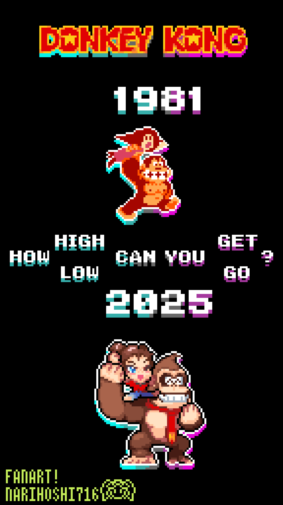 | ドンキーコング バナンザ発売記念イラスト | 2025年7月17日作成 タイトルは「How can you…」 ビルの上へと登りポリーンをさらう初代ドンキー（1981年）と、地下世界を下へと降りてポリーンと冒険するバナンザのドンキー（2025年）の対比構造がポイント |
| 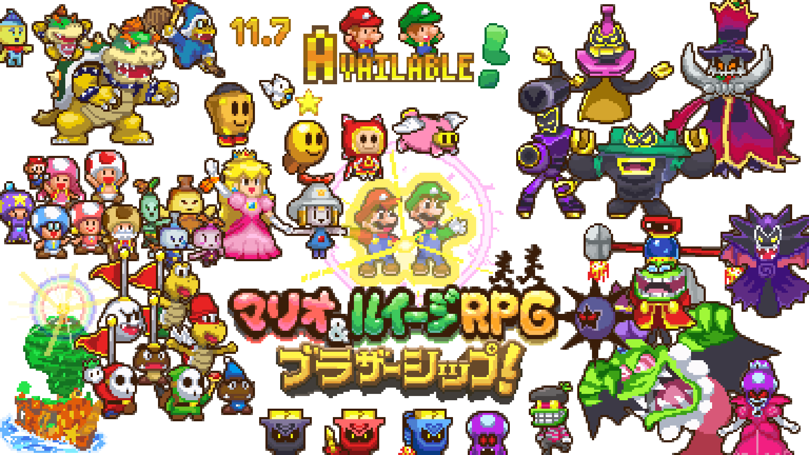 | 二人の絆が、世界をつなぐ！ | 2024年11月6日作成 マリオ&ルイージRPG ブラザーシップ！発売記念に歴代キャラ集合イラスト DSのマリルイ3チックなドット絵で描かれる、マリルイのコミカルで熱い冒険活劇の思い出 |
| 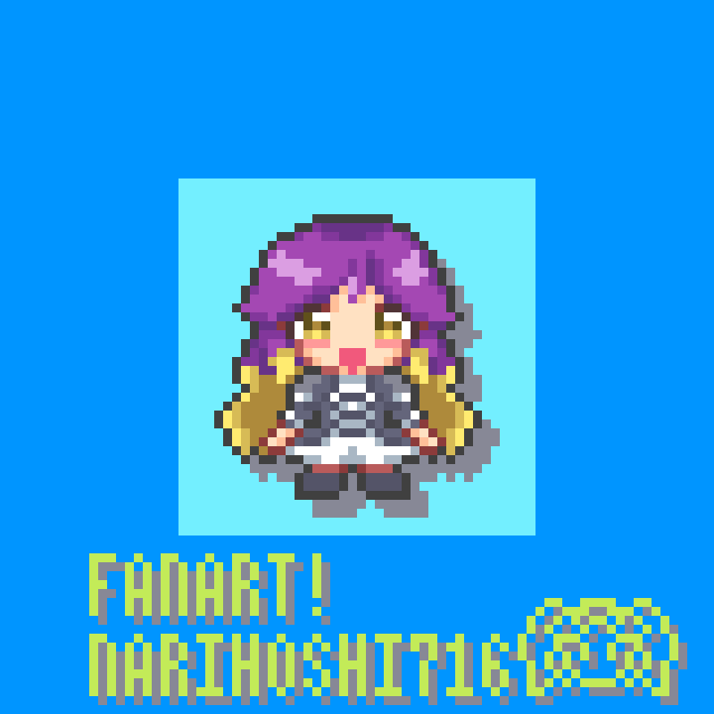 | 聖白蓮さんのおいでおいで | 2025年5月13日作成 東方星蓮船の聖白蓮さんがやさしく迎え入れてくれる やわらかな雰囲気でかわいいアニメーション |